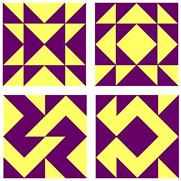

|
Finite Geometry Notes
|
Quilt Geometry
by Steven H. Cullinane
"Making quilt blocks is an excellent way to explore symmetry.
-- the Annenberg/CPB site on
Shape and Space in Geometry

The Annenberg/CPB site goes on to explain some very elementary notions of symmetry for the benefit of elementary-school teachers.
Here are some additional examples, following the above definition, of more traditional quilt blocks, with their traditional names:
Actually, a great deal more can be said about quilt geometry.
The following list indicates some resources.
Quilting Our Way Through Geometry
Geometry in Traditional Quilt Design
The Geometric Appeal of Quilting
Finding Geometry and Algebra in Quilts
Technology-Enhanced Learning of Geometry
Click and Drag to Make a Quilt
Intermediate:
Planet Patchwork Quilt Software Reviews
Quilt Software Article at About.com
Advanced:
Block Designs in Art and Mathematics